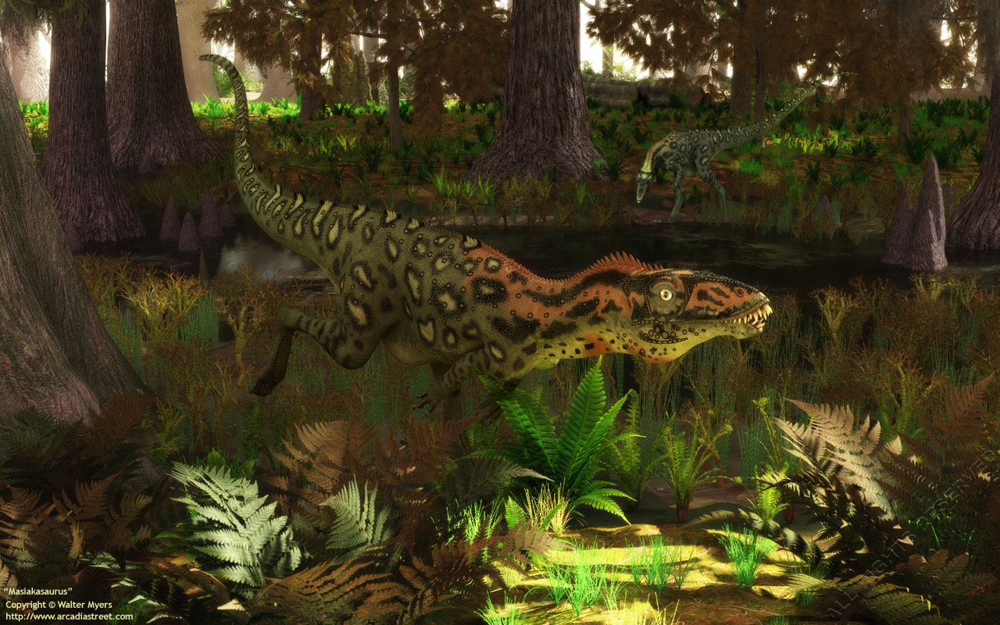

Mesozoic means "middle animals," and is the time during which the world fauna changed drastically from that which had been seen in the Paleozoic. Dinosaurs, which are perhaps the most popular organisms of the Mesozoic, evolved in the Triassic, but were not very diverse until the Jurassic. Except for birds, dinosaurs became extinct at the end of the Cretaceous. Some of the last dinosaurs to have lived are found in the late Cretaceous deposits of Montana in the United States.